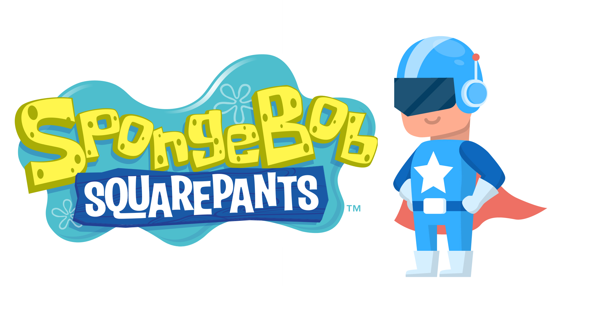
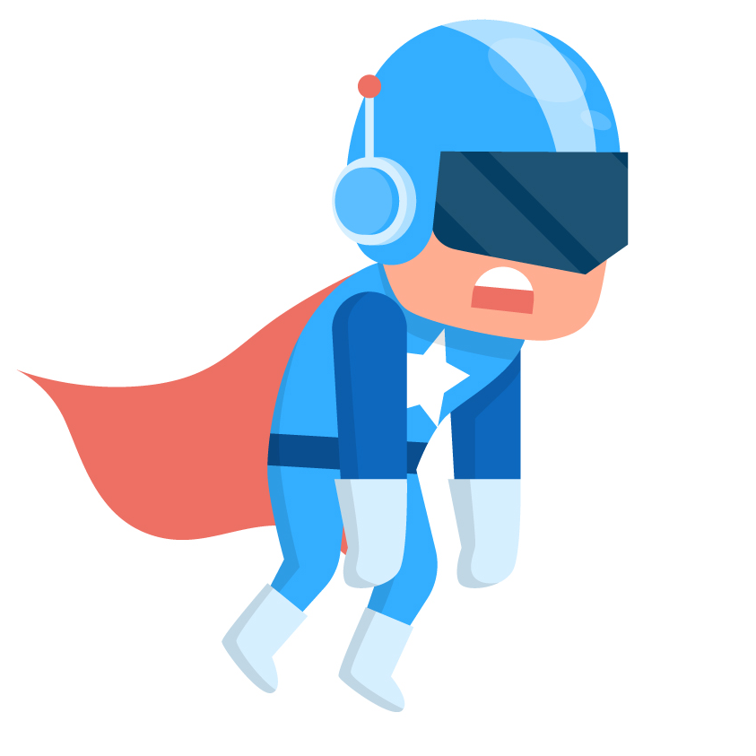
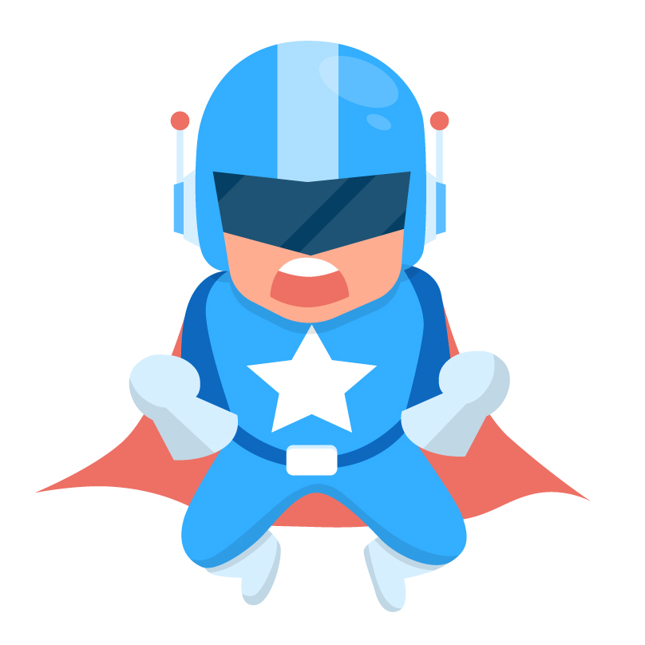

Кто я?
Меня зовут Никита Волков я блогер и автор блога про Губку Боба
«Губка Боб Квадратные Штаны» Американский мультипликационный сериал, который транслируется на телеканалах «Nickelodeon», ТНТ（2003-2017), 2х2, Карусель (с 2019). Появился в эфире 1 мая 1999 года.
«Губка Боб Квадратные Штаны», также известный, как «Спанч Боб Сквэр Пэнтс» (англ. SpongeBob SquarePants) — американский мультипликационный сериал, который транслируется на телеканалах «Nickelodeon», ТНТ（2003-2017), 2х2, Карусель (с 2019). Появился в эфире 1 мая 1999 года и стал одной из самых популярных анимационных программ телевидения[1]. Это первый по продолжительности показа анимированный сериал телеканала Nickelodeon, обогнавший «Ох уж эти детки!» (англ. «Rugrats») — на данный момент он насчитывает 11 полных сезонов и пять эпизодов двенадцатого. В мае 2017 года мультсериал был продлён на двенадцатый сезон.
Действия анимационного сериала разворачиваются на дне Тихого океана в небольшом вымышленном городке под названием Бикини-Боттом, главными действующими лицами являются представители морской фауны. Связано это с тем, что создатель сериала Стивен Хилленберг начал создавать мультфильмы и рисунки на тему жизни обитателей морского дна ещё когда преподавал морскую биологию в Океанографическом институте[en] округа Ориндж в Дана-Пойнт[en], штат Калифорния, с 1984 по 1987 год. В 1987 году Хилленберг оставил институт, чтобы реализовать свою мечту — стать мультипликатором[2][3].
Первые три эпизода «Требуется помощник», «Подводный пылесос» и «Чаепитие под куполом», входящие в состав первой серии, были в тестовом режиме показаны после шоу «Nickelodeon Kids' Choice Awards» 1 мая 1999 года. Официальная же премьера состоялась 17 июля и включала два эпизода второй серии: «Мыльные пузыри» и «Порванные штаны».
Настоящая популярность пришла к Губке Бобу после старта второго сезона и с тех пор оставалась на достаточно высоком уровне.
19 ноября 2004 года в США прошла премьера первого полнометражного фильма — «SpongeBob SquarePants: The Movie» по мотивам мультсериала. 6 февраля 2015 года вышел приквел — «Губка Боб в 3D». 
Действие почти всех серий происходит в подводном городке Бикини-Боттом (англ. «Bikini Bottom»), расположенном на дне Тихого океана у известного атолла. Бикини-Боттом похож на обычный человеческий город, здесь присутствуют спальный район, пригород (Поля медуз), пляж «Гу-Лагуна», аэропорт, вокзал, автобусное сообщение, парк развлечений, тюрьма, рестораны, кафе, больницы, школы, колледжи, банки, зоомагазины, обонятельные и другие центры, свалка, государственные учреждения, центры для получения документов, детские сады, ларьки, библиотеки, музеи, магазины продуктов (продовольственные магазины), дом для престарелых и ещё другие. Главный персонаж мультсериала — Губка боб Квадратные Штаны. Он и его приятели часто попадают в приключения. Как однажды сказал Стивен Хилленберг, образ Бикини-Боттом во многом был срисован с города Сиэтла, штат Вашингтон. Некоторое влияние на концепцию города также оказал любимый сериал Хилленберга «Спасатели Малибу».
Население Бикини-Боттома почти полностью состоит из антропоморфных рыб, китов, крабов, губок, кальмаров, осьминогов, морских звёзд, омаров и многих других представителей морской фауны. Некоторые из животных антропоморфными не являются — медузы, морские коньки, улитки, ламантины и черви относятся к менее развитым формам жизни. Улитки, например, в сериале ассоциируются с кошками, черви — с собаками. Первым земным животным, обосновавшимся в городе, является так называемый Чёрный Рыцарь, далёкий предок Сэнд
Культурные объекты поселения соответствуют обычным человеческим — создатель мультфильма «Губка Боб Квадратные Штаны» Стивен Хилленберг в интервью прямо заявил, что Сквидвард — осьминог, а имя было выбрано из-за большего благозвучия. Сквидвард пытается играть на кларнете, хотя и не всегда удачно, ненавидит обоих соседей за то, что те своими дурными способами не дают ему нормальной, адекватной и экстравагантной жизни. Например, в городе есть кинотеатр «Риф (англ. «The Reef»)», который, правда, по итогам серии «Чем-то пахнет» оказывается разрушенным, его разъело «кислотное» дыхание Губки Боба и Патрика. Главная новостная газета города носит название «Бикини Таймс (англ. "Bikini Times")» которая скорее всего является пародией на The New York Times. Другая газета называется Bikini Bottom Inquirer, пародия на The National Enquirer. В Бикини-Боттом присутствуют некоторые музыкальные коллективы, например, Boys Who Cry — пародия на сингл «Boys Don’t Cry» группы The Cure, а также группа Stingray 5000, прообразом которой стали Powerman 5000.
Окружающая Бикини-Боттом география довольно богата, тут есть и обширные леса, и высокие горы, в окрестностях можно наблюдать всевозможные пещеры, реки, луга, рифы и безжизненные пустыри. По соседству располагаются города Каменная Бездна, Нью Келп, Басс Вегас и Заповедник «Щупальца», а также Лагуна Гламур (по версии компьютерной игры «Лучший работник месяца»).
Спасибо за посещение!